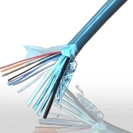
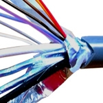
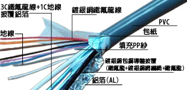

- 去顫電擊器訊號傳輸線
- 結構剖析 |
- 適用領域
- 去顫電擊器訊號傳輸線為去顫電擊器中傳輸訊號的傳輸線
- 技術資料
- 額定電壓: 30V AC
- 額定溫度: 80°C
- 導體: 鍍銀銅線/ 鍍銀銅包鋼線
- 絕緣體: FEP/ PVC
- 編織: 鍍銀銅網
- 隔離: 鋁箔/ 紙
- 填充: PP紗
- 顏色: 訂製
- 去顫電擊器訊號傳輸線規格書.PDF
| 結構 | 規格 | 導體 | 外被 | 外徑 mm |
數量 | 外層隔離1 | 外層隔離2 | 外被 | 總絞合外徑 mm |
|||
| 導體材質 | 導體結構 No.x mm |
外被材質1 | 隔離材質 | 外被材質2 | ||||||||
| 芯線 | 30 AWG | 鍍銀銅包鋼線 | 7 x 0.102 | FEP | 編織鍍銀銅網 | FEP | 0.86 | 2 | 鋁箔 | 紙 | PVC | 4.30 |
| 28 AWG |
鍍銀銅線 | 19 x 0.080 | FEP | 鋁箔 | - | 0.67 | 3 x 2 | |||||
| 28 AWG |
鍍銀銅線 | 19 x 0.080 | FEP | - | - | 0.67 | 8 | |||||
| 地線 | 28 AWG | 鍍銀銅線 | 19 x 0.080 | - | - | - | - | 3 | ||||
| 填充 | - | PP紗 | - | - | - | - | - | 1 | ||||